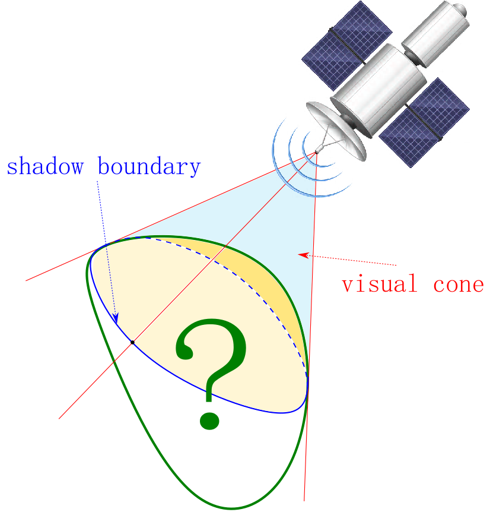
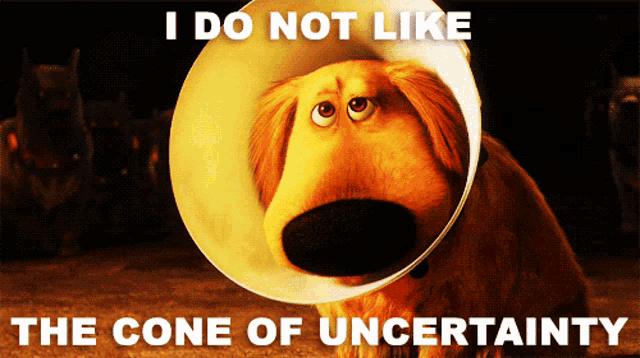
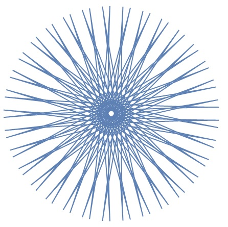
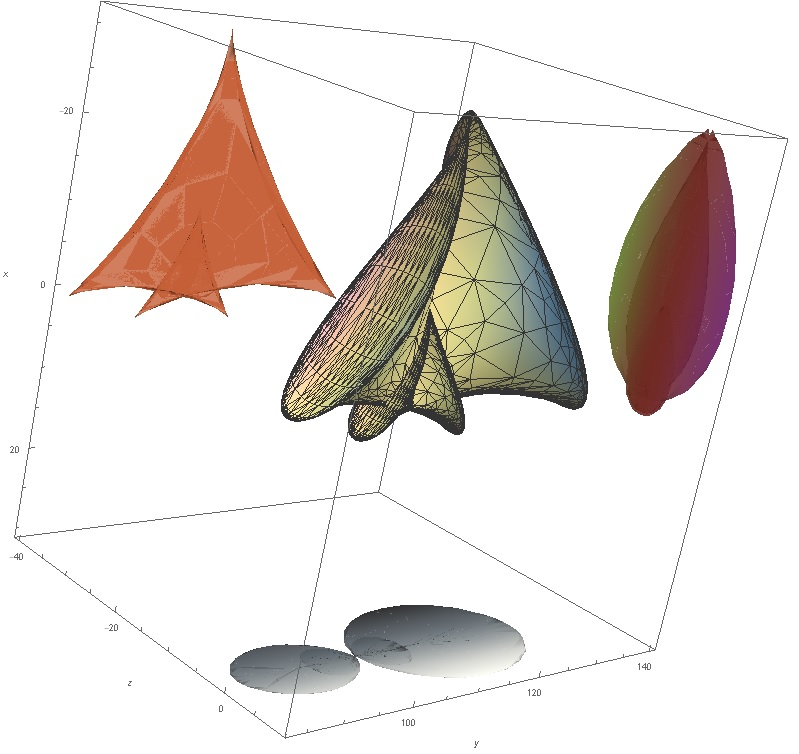

Research interests
- Convex & Discrete Geometry
- Geometric Functional Analysis
- Information Theory
- related topics of Probability Theory and Harmonic Analysis.
Selected talks & such
In case you still would like to know more about these and other questions I have been working on, here is my research statement.
What is Geometric Tomography?
Geometric Tomography designed to cover the area of mathematics dealing with the retrieval information about geometric objects from data about their projections, sections, or both.
This field of study is of particular interest, since it has a lot of possible applications in data science, statistics, computer vision, but also appears in X-ray procedures, scanning & 3D-printing tasks etc.
Visual and Shape Recognition
Another approach to understanding the structures of convex bodies works with point projections and visual cones, which is exactly the way an observer "sees" an object, i.e. a data about a convex body is obtained.
Problems related to visual recognition often are dealt with using techniques of Integral Geometry, Differential Geometry, Graph Theory.


Some (really) classical hedgehogs


|